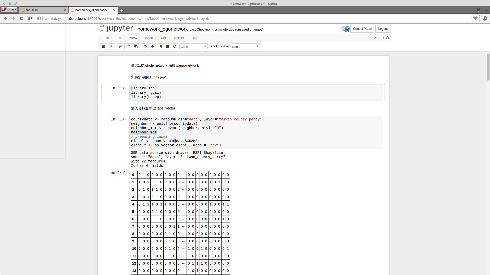
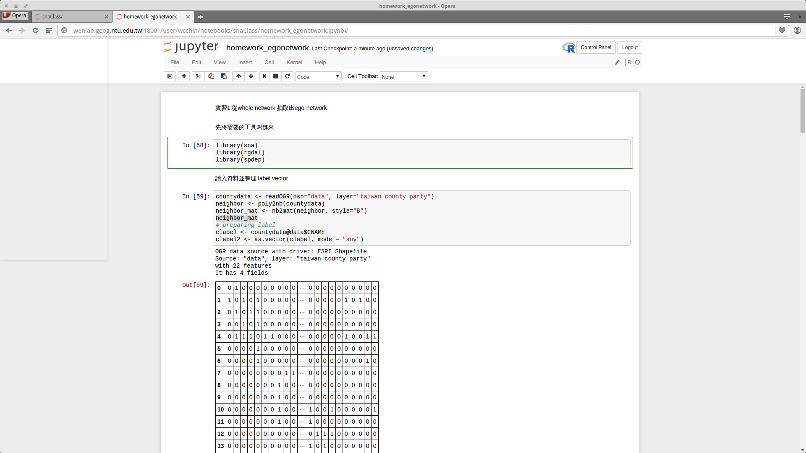

Jupyterhub
服務
Jupyterhub(Jupyter, ipython) 是一個資料分析平臺。其打開一頁頁的頁面，即是 notebook。Notebook 可以是 R 或 python2/python3 的程式。
操作
暫不說明
操作界面圖
登錄後畫面，是文件與資料夾的結構：

打開或新增一個 notebook(.ipynb) 檔之後，如下圖是 R 的 notebook： 
Jupyterhub(Jupyter, ipython) 是一個資料分析平臺。其打開一頁頁的頁面，即是 notebook。Notebook 可以是 R 或 python2/python3 的程式。
暫不說明
登錄後畫面，是文件與資料夾的結構：
打開或新增一個 notebook(.ipynb) 檔之後，如下圖是 R 的 notebook： 